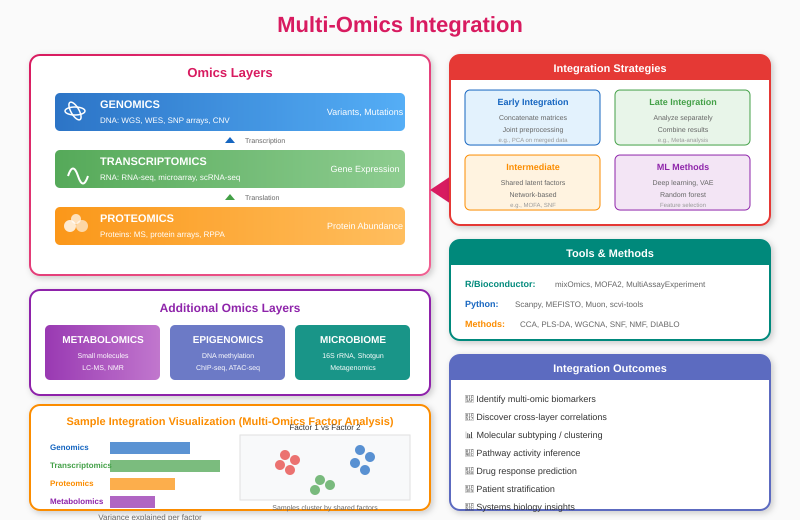

Chapter 20: Multiomics Data Integration¶
20.1 The Power of Integration¶
Biological systems are complex and multilayered. A single "omic" layer—whether it's the genome, transcriptome, proteome, or metabolome—provides only a partial snapshot of the organism's state. Multiomics data integration combines these distinct layers to construct a holistic view of biological processes, revealing interactions and regulatory mechanisms that would be invisible in isolation.

20.2 Challenges in Integration¶
Integrating these datasets is not straightforward due to: * Heterogeneity: Different data types (counts for RNA-Seq, intensities for Proteomics) have different distributions and noise profiles. * Dimensionality: The "Curse of Dimensionality" (\(p \gg n\)) is exacerbated when stacking datasets. * Missing Data: Samples might be missing from one layer but present in another.
20.3 Integration Strategies¶
There are three main approaches to integration:
1. Early Integration (Concatenation)¶
- Method: Concatenate matrices from different omics into one large matrix.
- Pros: Simple to implement.
- Cons: Ignores the specific statistical properties of each data type; larger datasets can dominate the signal.
2. Late Integration (Ensemble)¶
- Method: Analyze each omic layer separately (e.g., differential expression) and combine the lists of significant features or p-values at the end.
- Pros: Easy to interpret; respects individual data distributions.
- Cons: Misses correlations between layers (e.g., a gene is upregulated, but its protein is degraded).
3. Intermediate Integration (Joint Dimension Reduction)¶
- Method: Use mathematical techniques to find latent variables (factors) that explain variance across multiple views simultaneously.
- Tools: MOFA+ (Multi-Omics Factor Analysis), mixOmics (sPLS, DIABLO).
- Pros: Captures co-variation between layers; handles missing data well (MOFA).
20.4 Bioinformatics in Action: Multiomics with mixOmics (R)¶
Let's demonstrate an intermediate integration using the R package mixOmics. We will use sparse Partial Least Squares (sPLS) to find correlated features between Transcriptomics (mRNA) and Proteomics data.
library(mixOmics)
# Simulated Data
# X: Transcriptomics (50 samples x 1000 genes)
# Y: Proteomics (50 samples x 500 proteins)
data(liver.toxicity)
X <- liver.toxicity$gene
Y <- liver.toxicity$clinic # Using clinical data as proxy for a second omic layer for demo
# 1. Sparse PLS (sPLS)
# Selects 50 genes and 10 clinical variables that covary
result.spls <- spls(X, Y, ncomp = 2, keepX = c(50, 50), keepY = c(10, 10))
# 2. Visualization
# Plot samples in the integrated subspace
plotIndiv(result.spls, group = liver.toxicity$treatment$Dose.Group,
pch = 16, ellipse = TRUE, legend = TRUE, title = 'sPLS: Genes vs Clinical')
# 3. Correlation Circle Plot
# Shows correlations between selected features from both datasets
plotVar(result.spls, cutoff = 0.7, title = 'Correlation Circle')
# 4. Network Visualization
# Visualizes the connections between the two layers
network(result.spls, comp = 1, cutoff = 0.6,
color.node = c("mistyrose", "lightcyan"),
shape.node = c("rectangle", "circle"))
20.5 The Future: Single-Cell Multiomics¶
The frontier of integration is at the single-cell level (e.g., CITE-seq, which measures RNA and surface proteins in the same cell). Methods like Seurat v4 allow for the "anchoring" of datasets to transfer labels and infer relationships at cellular resolution.
Summary¶
Multiomics integration is the key to unlocking the genotype-phenotype map. By moving from single-layer analysis to integrated models like MOFA or sPLS, we can discover robust biomarkers and mechanistic pathways that drive complex diseases.
20.6 Batch Correction and Quality Control¶
Integrating data from multiple labs or runs requires careful batch correction:
- ComBat / SVA: Standard methods for expression data; ComBat-seq for counts.
- Harmony / scVI: For single-cell data integration and label transfer.
- Caution: Always visualize before and after correction (PCA, UMAP) and avoid removing real biological signal.
20.7 Recommended Multiomics Workflow¶
- Harmonize sample IDs and metadata across layers.
- Perform QC and normalization per layer.
- Apply batch correction if needed.
- Run joint dimension reduction (MOFA+, mixOmics).
- Interpret factors biologically (enrichment, network mapping).
- Validate top features in independent cohorts or with orthogonal assays.
[End of Book]